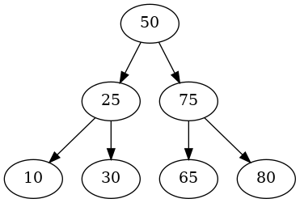

Binary Search Tree: Randomized
Table of Contents
This is the next post in a series on Binary Search Trees that start with this post. In this post we'll be looking at tree-heights when you randomize the order that the nodes are inserted into the tree.
Introduction
We now have a basic Binary Search Tree and some methods to build and query it. I didn't really go over it but if you look at the basic querying methods (search, min, max, etc.) you can see that they boil down to starting at a node (often the root) and then traversing up or down the levels of the tree until we find what we want or we reach a leaf. This means that at most the number of comparisons you make (everytime you reach a node you compare the node's key to your key to pick a child to follow) will be the height of tree (h).
The height of the tree depends, however, on the order in which you insert and delete the nodes. If you insert them in ascending order, for instance, you end up with all the nodes being right children and a height of n - 1 (the number of edges). But, CLRS shows that if you randomize the insertion you will, on average have a height of \(O(\lg(n))\) so I'm going to take an experimental look at that here.
Imports and Setup
# python
from functools import partial
from pathlib import Path
import random
# pypi
from expects import equal, expect
from joblib import Parallel, delayed
import altair
import networkx
import numpy
import pandas
# this project
from bowling.data_structures.binary_search_tree import (Node, Query, Tree)
# monkey projects
from graeae import Timer
from graeae.visualization.altair_helpers import output_path, save_chart
TIMER = Timer()
SLUG = "binary-search-tree-randomized"
GRAPH_OUTPUT = Path(f"files/posts/{SLUG}/")
ALTAIR_OUTPUT = output_path(SLUG)
if not GRAPH_OUTPUT.is_dir():
GRAPH_OUTPUT.mkdir()
save_it = partial(save_chart, output_path=ALTAIR_OUTPUT)
def preorder(node: Node, adjacencies: dict) -> None:
"""Build the adjancency dictionary
Args:
node: the next node to add
adjacencies: dictionary of key: adjacent node keys
"""
if node is not None:
left = node.left.key if node.left is not None else None
right = node.right.key if node.right is not None else None
if any((left, right)):
if left is not None and right is not None:
adjacencies[node.key] = (left, right)
elif left is not None and right is None:
adjacencies[node.key] = (left, )
else:
adjacencies[node.key] = (right,)
preorder(node.left, adjacencies)
preorder(node.right, adjacencies)
return
Some Illustrative Cases
Added In Sorted Order
This is our worst-case where the nodes after the root all end up as right-children and the height is n - 1.
tree = Tree()
query = Query(tree)
n = 5
for node in range(n):
tree.insert(Node(node))
expect(query.height).to(equal(n - 1))
adjacencies = {}
preorder(tree.root, adjacencies)
graph = networkx.nx_pydot.to_pydot(networkx.DiGraph(adjacencies))
graph.write_png(GRAPH_OUTPUT/"first_tree.png")

If it were in reversed order we'd get a similar graph but the children would all be on the left and in the reverse order, but since graphviz/dot doesn't show left vs right it'd be hard to see what's going on.
A More Balanced Tree
This would be the best case, where the nodes are evenly balanced across the tree. Even though we have more nodes than the prior tree we only have a height of two.
KEYS = [50, 25, 75, 10, 30, 65, 80]
tree = Tree(Node(KEYS[0]))
for key in KEYS[1:]:
tree.insert(Node(key))
adjacencies = {}
preorder(tree.root, adjacencies)
graph = networkx.nx_pydot.to_pydot(networkx.DiGraph(adjacencies))
graph.write_png(GRAPH_OUTPUT/"second_tree.png")
query = Query(tree)
expect(query.height).to(equal(2))

Something In Between
If we insert the nodes in random order then we would expect to see something better than the worst case but not a perfectly balanced tree either.
random.shuffle(KEYS)
tree = Tree(Node(KEYS[0]))
for key in KEYS[1:]:
tree.insert(Node(key))
adjacencies = {}
preorder(tree.root, adjacencies)
graph = networkx.nx_pydot.to_pydot(networkx.DiGraph(adjacencies))
graph.write_png(GRAPH_OUTPUT/"third_tree.png")

An Empirical Check
Height vs Nodes
def heights(keys: list) -> tuple:
"""Builds the binary tree from the nodes and gets height
Args:
nodes: list of keys for nodes
Returns:
(number of nodes, height)
"""
tree = Tree()
query = Query(tree)
for key in keys:
tree.insert(Node(key))
return (len(keys), query.height)
things_to_sort = (random.sample(range(count), k=count)
for count in range(10, 10**5, 100))
with TIMER:
height_vs_count = Parallel(n_jobs=-1)(
delayed(heights)(thing_to_sort)
for thing_to_sort in things_to_sort
)
Started: 2022-03-17 20:17:02.325084 Ended: 2022-03-17 20:17:30.486929 Elapsed: 0:00:28.161845
NODES, HEIGHT = 0, 1
unzipped = list(zip(*height_vs_count))
frame = pandas.DataFrame({"Nodes": unzipped[NODES],
"Height": unzipped[HEIGHT]})
frame["3Log2"] = 3 * numpy.log2(frame["Nodes"])
points = altair.Chart(frame).mark_point().encode(
x="Nodes",
y="Height",
tooltip = [altair.Tooltip("Nodes", format=","),
altair.Tooltip("Height", format=",")]
)
line = points.mark_line(color="#feb236").encode(
x="Nodes",
y="3Log2",
tooltip = [altair.Tooltip("Nodes", format=","),
altair.Tooltip("3Log2", format=",")]
)
chart = (line + points).properties(
title="Randomized Binary Search Tree Node Count vs Height",
width=800, height=500,
)
save_it(chart, "nodes-vs-height")
So it looks like when you insert the nodes randomly you tend to get a tree height that's \(O(\log(n))\).
Node Distribution
nodes = 10**4
urn = list(range(nodes))
samples = 10**4
print(f"log2({nodes}) = {numpy.log2(nodes)}")
things_to_sort = (random.sample(urn, k=nodes) for sample in range(samples))
with TIMER:
height_distribution = Parallel(n_jobs=-1)(
delayed(heights)(thing_to_sort)
for thing_to_sort in things_to_sort
)
log2(10000) = 13.287712379549449 Started: 2022-03-17 21:15:42.270315 Ended: 2022-03-17 21:16:32.620183 Elapsed: 0:00:50.349868
NODES, HEIGHT = 0, 1
unzipped = list(zip(*height_distribution))
frame = pandas.DataFrame({"Nodes": unzipped[NODES],
"Height": unzipped[HEIGHT]})
base = altair.Chart(frame)
histogram = base.mark_bar(color="#50586C").encode(
x=altair.X("Height", bin=True),
y="count()", tooltip=altair.Tooltip("Height"))
median = base.mark_rule(color="#DCE2F0").encode(
x="mean(Height):Q", size=altair.value(5),
tooltip=altair.Tooltip("mean(Height)"))
chart = (histogram + median).properties(
title=f"Randomized Binary Search Tree Height Distribution ({nodes:,} Nodes)",
width=800, height=500,
)
save_it(chart, "height-distribution")
print(f"Median: {frame.Height.median()}")
print(f"Min: {frame.Height.min()}")
print(f"Max: {frame.Height.max()}")
print(f"3 x log2(n): {3 * numpy.log2(frame.Nodes.iloc[0]):.2f}")
Median: 30.0 Min: 24 Max: 40 3 x log2(n): 39.86
So, with our evenly ranged inputs, even though in the worst case we could have ended up with a tree with a height of 10,000, by inserting the nodes in random order it turns out that most of the time it has a height of 30 and in this sample it has a maximum of 40.